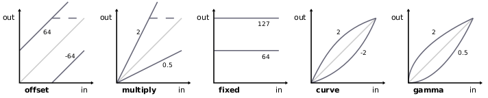
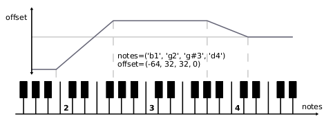

mididings - Reference
Functions
config(**kwargs)
Changes global mididings settings. This should be called only once, before constructing any processing units.
Possible keyword arguments are:
- backend: MIDI backend to be used:
- 'alsa': Use the ALSA sequencer (this is the default).
- 'jack': Use JACK MIDI. All MIDI events are buffered and processed outside the JACK process callback,
and will thus be delayed by (at least) one period.
- 'jack-rt': MIDI events are processed directly in the JACK process callback. It's not safe to run Python
code in a realtime context, so it's recommended to avoid Process(), which might cause xruns (or worse).
All other units should be safe to use.
- client_name: MIDI client name to be used.
- in_ports/out_ports: Integers indicating the number of input/output ports to create (named in_n
or out_n), or lists of port names, in which case the list's length determines the number of ports.
- data_offset: 1 (default) or 0. Determines whether program, port and channel numbers will be
in the range 1-128 or 0-127.
- octave_offset: Offset in octaves from note number 0 to C0.
Default is 2, meaning that "middle C" is designated as C3.
- initial_scene: The number of the first scene to be activated.
- start_delay: The number of seconds before sending any MIDI events (i.e. switching to the first scene).
A small value like 0.5 can be used to give tools like qjackctl's patchbay time to connect the ports.
A value of 0 instructs mididings to wait for the user to press enter. Default is None.
hook(*args)
Registers "hook" objects, that can be used to extend the functionality of mididings.
run(patch)
Starts the MIDI processing. This is usually the last function called by a mididings script.
run(scenes=..., control=None, pre=None, post=None)
Starts the MIDI processing, using multiple scenes.
The SceneSwitch() unit can be used to switch between these scenes.
- scenes: A dictionary with program numbers as keys, and Scene objects or plain patches as values.
Values can also be tuples with two items, the first being an init-patch that's executed once every time the
scenes is selected, and the second being the actual patch that processes incoming events.
- control: The "control" patch, which is always active, and runs in parallel to the current scene.
- pre/post: Allows processing to take place before/after every scene. Does not affect
the control patch.
process_file(infile, outfile, patch)
Requires mididings to be compiled with support for libsmf.
Reads a standard MIDI file, processes it, then writes the result back to a file.
Classes
Scene(name, patch, init_patch=None)
Constructs a Scene object to be used with the run() function.
- name: A string describing the scene.
- patch: The patch defining the MIDI processing to take place for incoming events.
- init_patch: An optional patch that will be triggered when switching to this scene.
SceneGroup(name, [subscene, ...])
Constructs a SceneGroup object.
This can be used to group multiple scenes under a common name and program number.
Each of the subscenes should be a Scene object.
Filter(NOTE|CTRL)
MidiEvent
Used as the MIDI event data type inside the Process() and Call() units.
A MidiEvent object has the following attributes:
- type: The event type, one of the constants described below.
- port: The event port.
- channel: The event channel.
- data1, data2: Data bytes, meaning depends on event type.
There are also aliases for these attributes, some of which are only valid for certain types of events:
- note: Note number, alias for data1.
- velocity: Note velocity, alias for data2.
- param: Controller number, alias for data1.
- value: Controller parameter, alias for data2.
- program: Program number, alias for data2. Unlike data2, this value is affected by the data_offset setting.
Constants
Event Types
Every event has one of these types:
- NOTEON
- NOTEOFF
- CTRL
- PROGRAM
- PITCHBEND
- AFTERTOUCH
- POLY_AFTERTOUCH
- SYSEX
- SYSCM_QFRAME
- SYSCM_SONGPOS
- SYSCM_SONGSEL
- SYSCM_TUNEREQ
- SYSRT_CLOCK
- SYSRT_START
- SYSRT_CONTINUE
- SYSRT_STOP
- SYSRT_SENSING
- SYSRT_RESET
For use in filters, the following constants are also defined:
- NOTE = NOTEON | NOTEOFF
- SYSCM = SYSCM_*
- SYSRT = SYSRT_*
- NONE
- ANY
When building filters, event types can be combined using | (bitwise or) and ~ (bitwise negation).
Event Attributes
These constants are used to refer to an event's data attributes:
- EVENT_PORT
- EVENT_CHANNEL
- EVENT_DATA1
- EVENT_DATA2
- EVENT_NOTE
- EVENT_VELOCITY
- EVENT_PARAM
- EVENT_VALUE
- EVENT_PROGRAM
Units
These are the basic building blocks from which you can build your patches.
- Filters: These units filter by some property of the MIDI event. If the event matches, it's passed
unmodified, otherwise it's discarded.
- Splits: Basically just combinations of multiple filters of the same kind.
- Modifiers: These units change some property of the MIDI event.
- Generators: Converters from one event type to another.
- Function Calls: These units allow calling back into Python code.
- Miscellaneous: Anything that doesn't fit into any of the other categories :)
Filters
Filter(type, ...)
Filters by one or more event types.
Filter(NOTE|CTRL)
PortFilter(port, ...)
ChannelFilter(channel, ...)
Filters by event port(s) or channel(s).
KeyFilter(note)
KeyFilter(lower, upper)
KeyFilter(note_range)
KeyFilter(notes=...)
Filters by note or note-range.
VelocityFilter(value)
VelocityFilter(lower=...)
VelocityFilter(upper=...)
VelocityFilter(lower, upper)
Filters by note-on velocity.
CtrlFilter(ctrl, ...)
Filters by CC number(s).
CtrlValueFilter(value)
CtrlValueFilter(lower=...)
CtrlValueFilter(upper=...)
CtrlValueFilter(lower, upper)
Filters by CC value.
ProgramFilter(program, ...)
Filters by PC number(s).
SysExFilter(sysex)
Filters by sysex data, specified as a string or as a sequence of integers.
If sysex doesn't end with F7, partial matches that start with the given data bytes are accepted.
SysExFilter('\xf0\x41\x10')
SysExFilter(manufacturer=...)
Filters by sysex manufacturer id, which can be a string or a sequence of integers, with a length of one or three bytes.
SysExFilter(manufacturer=0x43)
Splits
PortSplit({port: patch, ...})
PortSplit({(port, ...): patch, ...})
ChannelSplit({channel: patch, ...})
ChannelSplit({(channel, ...): patch, ...})
Splits by port or channel.
KeySplit(note, patch_lower, patch_upper)
KeySplit({(lower, upper): patch, ...})
KeySplit({note_range: patch, ...})
Splits by note. Non-note events are sent to all patches.
VelocitySplit(threshold, patch_lower, patch_upper)
VelocitySplit({(lower, upper): patch, ...})
Splits by velocity. Non-note events are sent to all patches.
CtrlSplit({ctrl: patch, ...})
CtrlSplit({(ctrl, ...): patch, ...})
Splits by controller number.
Non-controller events are left unchanged, but not sent to any of the patches.
CtrlValueSplit(threshold, patch_lower, patch_upper)
CtrlValueSplit({value: patch, ...})
CtrlValueSplit({(lower, upper): patch, ...})
Splits by controller value.
Non-controller events are left unchanged, but not sent to any of the patches.
ProgramSplit({program: patch, ...})
ProgramSplit({(program, ...): patch, ...})
Splits by program number.
Non-program-change events are left unchanged, but not sent to any of the patches.
SysExSplit({sysex: patch, ...})
SysExSplit(manufacturers={manufacturer: patch, ...})
Splits by sysex data or manufacturer id.
Modifiers
Port(port)
Channel(channel)
Changes port or channel.
Transpose(offset)
Transposes all note events by the given number of semitones.
Key(note)
Changes note-events to a fixed note number.
Velocity(offset)
Velocity(multiply=...)
Velocity(fixed=...)
Velocity(curve=...)
Velocity(gamma=...)
Changes velocity by adding an offset, multiplying with a factor, setting it to a fixed value, or applying a velocity-curve.
gamma uses a simple power function, where values greater than 1 increase velocity, while values between 0 and 1 decrease it.
curve uses a somewhat smoother exponential function, where positive values increase velocity, while negative values decrease it.

Within mididings, velocity values may be (temporarily) greater than 127 or less than 1.
When sending events through a MIDI output port, or by using the Sanitize() unit, velocities greater than 127 will automatically
be reduced to 127, and events with a velocity less than 1 will be removed.
Velocity(curve=1.0)
VelocitySlope(notes, offset)
VelocitySlope(notes, multiply=...)
VelocitySlope(notes, fixed=...)
VelocitySlope(notes, curve=...)
VelocitySlope(notes, gamma=...)
Changes velocity, applying a linear slope between different notes.
This can be thought of as a Velocity() unit with different parameters for different notes, and is useful for example
to fade-in a sound over a region of the keyboard.
Both parameters must be sequences of the same length, where one velocity value corresponds to each note.

VelocitySlope(notes=('b1','g2','g#3','d4'), offset=(-64, 32, 32, 0))
VelocityLimit(lower, upper)
VelocityLimit(upper)
VelocityLimit(lower=...)
Confines velocity to values between lower and upper (inclusive).
CtrlMap(ctrl_in, ctrl_out)
Maps one controller to another (i.e. changes the CC number).
CtrlMap(64, 66)
CtrlRange(ctrl, out_min, out_max, in_min=0, in_max=127)
Maps controller range in to out.
An input value of in_min or less results in an output value of out_min.
Likewise, an in value of in_max or greater results in an output value of out_max.
CtrlRange(11, 127, 0)
Generators
Ctrl(ctrl, value)
Ctrl(port, channel, ctrl, value)
Program(program)
Program(port, channel, program)
NoteOn(note, velocity)
NoteOn(port, channel, note, velocity)
NoteOff(note, velocity)
NoteOff(port, channel, note, velocity)
Changes the type of the event.
If port and channel are omitted, the values of the input event are used.
To "reuse" other values from the incoming event, one of the EVENT_* constants can be used in place of any parameter.
Filter(AFTERTOUCH) % Ctrl(1, EVENT_VALUE)
SysEx(sysex)
SysEx(port, sysex)
Creates a new system exclusive event. sysex can be a string or a sequence of integers, and must include the leading F0 and trailing F7 bytes.
Generator(type, port, channel, data1=0, data2=0)
Generic generator. System common and system realtime events can only be generated this way.
Function Calls
Process(function)
Calls a Python function. This will stall any other MIDI processing until the function returns.
- function: A function (or any other callable object) that will be called with MidiEvent
objects as its only argument.
Possible return values are:
- A single MidiEvent object: output one event and continue processing it.
- A list of MidiEvent objects: output multiple events.
- An empty list or None: discard current event.
Alternatively, function can be a generator that yields MidiEvent objects.
Call(function)
Schedules a Python function for execution, and continues MIDI processing immediately.
- function: The function to be called. Unlike Process(), this will run the function in another thread.
Its return value will be ignored.
Call(thread=...)
Like Call(), but runs the function in its own thread.
System(cmd)
Runs an arbitrary shell command, without waiting for the command to complete.
- cmd: The command as a string, or a Python function taking a single MidiEvent parameter and returning a string.
Miscellaneous
Pass()
Does nothing.
Discard()
Discards the current event.
SceneSwitch()
SceneSwitch(number)
SceneSwitch(offset=...)
Switches to another scene.
number should be a scene number, or one of the EVENT_* constants.
offset can be positive or negative and will be added to the current scene number.
Without parameters, the program number of the incoming event (should be a program change) will be used.
SubSceneSwitch()
SubSceneSwitch(number)
SubSceneSwitch(offset=..., wrap=True)
Switches between subscenes within a scene group.
Init(patch)
Executes patch when switching to the scene containing this unit (essentially adding it to the init-patch,
see run() for more information).
Output(port, channel, program=None, volume=None, pan=None, expression=None, ctrls={})
Routes incoming events to the specified port/channel.
Optionally, when switching to the scene containing this unit, a program change and/or arbitrary control changes can be sent.
To send a bank select in addition to the program change, program can be a tuple with two elements, where the first element
is the bank number, and the second is the program number.
Output('synth', 1, volume=100)
OutputTemplate(*args, **kwargs)
Creates an object that when called will behave like Output(), with args and kwargs replacing some of its arguments.
This works just like functools.partial(Output, *args, **kwargs), but with the added benefit that an OutputTemplate
object also supports operator >> like any unit.
synth = Transpose(12) >> OutputTemplate('synth', 1, 42)
patch1 = synth(64)
patch2 = synth(127)
patch1 = Transpose(12) >> Output('synth', 1, 42, 64)
patch2 = Transpose(12) >> Output('synth', 1, 42, 127)
Print(name=None, portnames=None)
Prints event data.
- name: A string to be printed before each event.
- portnames: Pass 'in' or 'out' to print input or output port names, rather than just numbers.
$ mididings "Print()"
Print(string=...)
Prints a string.
Instead of a fixed value, string can also be a Python function that takes a single MidiEvent parameter, and returns the string to be sent.
Filter(NOTEON) % Print(string=lambda ev: '#'*ev.velocity)
Sanitize()
Makes sure the event is a valid MIDI message. Events with invalid port, channel, controller, program or note number are
discarded, note velocity and controller values are confined to the range 0-127.